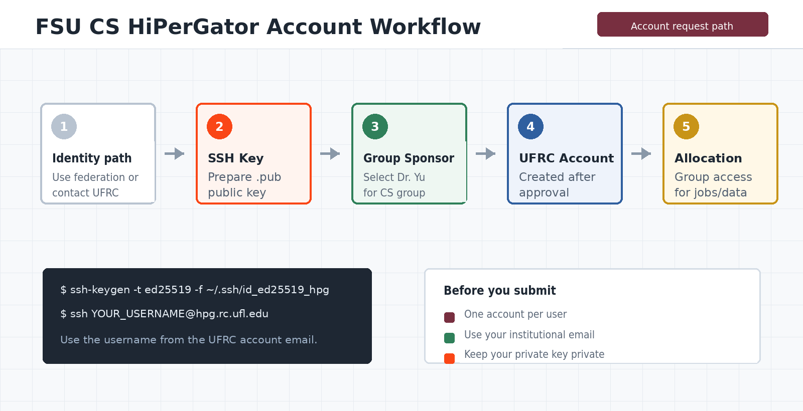

Identify your professor
Know the specific professor you work with and the project that requires access.
FSU Computer Science Resource Guide
Use this page for the FSU Computer Science Department allocation. The account request and the department allocation are separate steps, and your Comments must identify the professor you work with.
Reviewed September 8, 2026. UFRC documentation controls if procedures change.

Quick path
Know the specific professor you work with and the project that requires access.
Generate an SSH key pair locally and keep the private key private.
Submit the federated request with your own institution's credentials, or follow the approved affiliate path if federation is unavailable.
Complete the account request, then request membership in the department group when required.
Choose your identity path
Select Federated Account Request, choose Florida State University, and use your FSU credentials and FSU email.
If your home institution appears in the UFRC federated liaison list, select it and use that institution's credentials and email. Your FSU faculty sponsor still approves department access.
Ask your FSU faculty sponsor to confirm the official affiliate-account or UF GatorLink path before applying. Do not invent an FSU identity or use another person's credentials.
Department allocation
The January-March 2026 email thread describes a five-year department-level purchase for multiple Computer Science groups. It is a shared resource purchase, not an automatic account for every user and not a substitute for sponsor approval.
NCPU
NGPU
Blue storage units
Orange storage units
Updated total reported in the email thread
fsu-compsci-dept.Before applying
Use the sponsor or group option shown by the current UFRC form and department instructions. Do not guess from a resource label. External students should confirm that their FSU faculty sponsor has approved the department resource path. If the department entry is missing, contact the department administrator or UFRC Support before submitting.
SSH public key
ssh-keygen -t ed25519 -C "your_institutional_email" -f ~/.ssh/id_ed25519_hipergator
cat ~/.ssh/id_ed25519_hipergator.pubssh-keygen -t ed25519 -C "your_institutional_email" -f $env:USERPROFILE/.ssh/id_ed25519_hipergator
type $env:USERPROFILE/.ssh/id_ed25519_hipergator.pub
Upload the file ending in .pub. Never upload or send the private key. The public key may be required even when you plan to start with a browser-based interface.
Submit the request
I am a [FSU student/staff member OR student/researcher at HOME INSTITUTION] working with Professor [FULL NAME]. I am requesting HiPerGator access for [PROJECT, COURSE, OR PURPOSE] and would like to use the FSU Computer Science Department allocation. My institutional email is [EMAIL]. Please process my request under the department's current sponsor and group-approval procedure.Replace every bracketed field with specific information. External students should keep their home institution and institutional email in the form. The professor named in Comments must be the person you actually work with, not a generic department label. Follow the current UFRC form if its sponsor or group choices change.
After approval
Complete any required onboarding or training, then test an interactive login and a small job.
ssh -i ~/.ssh/id_ed25519_hipergator YOUR_HIPERGATOR_USERNAME@hpg.rc.ufl.eduUse the HiPerGator username from your account email. It may differ from the local part of your institutional email address.
Follow the current UFRC network guidance. Federated SSH access may require eduVPN before connecting.
Confirm your default group, Slurm account, storage path, and the department group you were approved to use.
Department membership
fsu-compsci-dept when neededfsu-compsci-dept.FAQ
Name the specific professor whose project, course, or research work you are joining. Do not use only the department name. If you are working with more than one professor, list the primary contact first and mention the others in the same comment.
No. If your account already exists, request group membership through UFRC Support and provide your existing HiPerGator username.
Do not select an unrelated sponsor. Contact the department administrator or UFRC Support and state that you are requesting access to the FSU Computer Science Department resource group.
Yes, if an FSU faculty sponsor confirms the work and the student follows the identity path for their home institution. Use a federated home-institution account when available; otherwise follow the official affiliate-account instructions. Department access is still subject to approval.
Official references